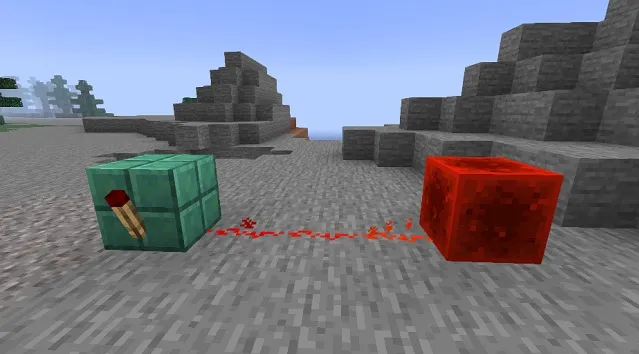

Mace
You can repair mace with mending, but even with breezerods on anvil.

You can deal more damage with the mace, if you hit the target with something else and at the same tick swap to the mace.

Tip 2
The cauldron can pick up water by time + if you place dripstone under lava it can make new lava.

Redstone
Redstone torches can be used as reverse signal.
